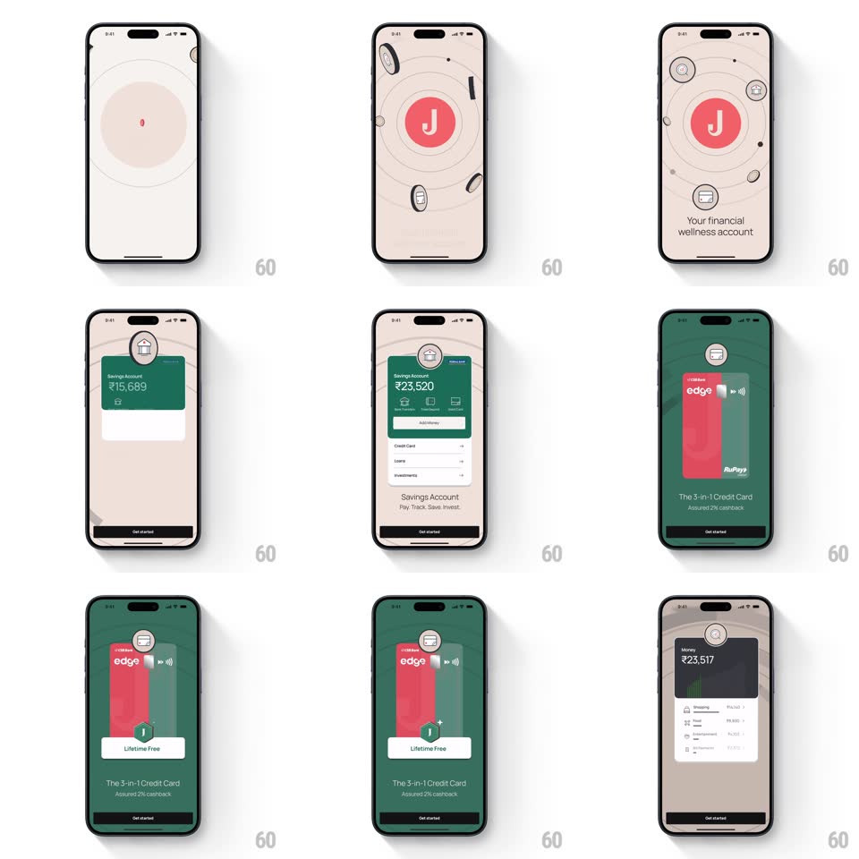

Media
Frame-by-frame

Rebuild this animation 1:1: Jupiter's splash - the red wordmark gives way to a spinning J coin that settles into a central badge while financial icons orbit it like planets, then the onboarding line fades in.

Rebuild this animation 1:1: Jupiter's splash - the red wordmark gives way to a spinning J coin that settles into a central badge while financial icons orbit it like planets, then the onboarding line fades in. ## Integration Integration: stack-agnostic spec - springs given as stiffness/damping, timed motions as duration + curve; map every value to your framework and animation library of choice. ## Scene A cream screen with the red "Jupiter" wordmark. The mark flips into a red circular J badge at screen center, and coins, cards, and finance glyphs swing in on elliptical orbit rings drawn faintly around the badge. "Your financial wellness account" sits at the bottom. ## Motion spec Pattern: orbital assembly. - Wordmark phase (0-500ms): the wordmark holds, then flips/shrinks (rotateY 180deg + scale to 0.3, 400ms) into the red J badge which bounces to full size (spring ~360/20). - Orbit rings draw in: 2-3 thin elliptical strokes trace around the badge (stroke-dash draw, 600ms, staggered 150ms). - Icons fly in along the rings: each financial icon (coin, card, bank glyphs in circles) enters from off-ring, snapping onto its orbit with a small overshoot (spring ~300/18), staggered 120ms; once placed, all icons drift slowly along their ellipses (one revolution per ~12s, counter-rotating rings). - The badge breathes gently (scale +-2%, 3s) while icons orbit. - Tagline "Your financial wellness account" fades up at the bottom (translateY 12px, 300ms) once the first icons land; onboarding cards slide in after if the sequence continues. ## Calibration - Orbits are ellipses tilted at different angles (like a solar system diagram), not flat circles. - Icon drift is slow and continuous - this is ambient, not a one-shot. ## Reduced motion Badge and icons fade in statically; no orbiting. ## Don't miss - The palette is restrained: cream field, red badge, neutral gray icons - the red J is the only saturated element. - The wordmark-to-badge flip is the transition's signature; don't crossfade it.